Accession Help
Accession records every folder and file of the media you receive for a matter, with its SHA-1 hash, in one inventory file. It shows totals by media, category and extension, and exports the inventory to Excel.
Press F1 or the ? button on any screen to open the help for that screen.
- Start screen and inventoriesCreate or open an inventory
- DashboardTotals, categories, years, largest files
- MediaAdd, scan and delete media
- FilesBrowse, filter and find files
- Saved searchesCollect files in named lists
- Copying filesA copy batch, or copy in the app
- CategoriesFiles grouped by extension
- Scan QueueThe running scan and what waits
- ErrorsFiles that could not be read
- Audit LogEvery change, who and when
- Export to ExcelWorkbooks for the producing party
- Settings and propertiesUnits, times, scanning, matter details
- Locking and read-onlyWorking with others on one inventory
Start screen and inventories
An inventory is a single file (.accession; a SQLite database, named so it is not mistaken for other SQLite files; inventories made before version 0.2 end in .sqlite and open as before) that holds everything about one matter's media. You can
keep it on a network share so colleagues can open it too.
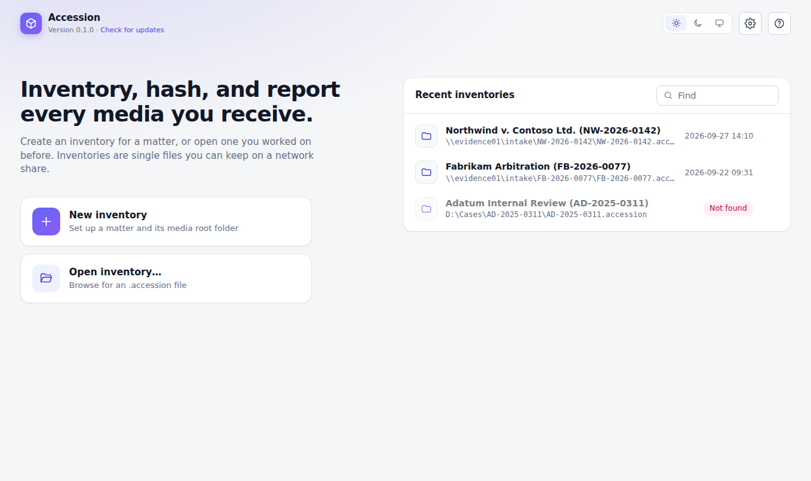
- New inventory (Ctrl N) asks for the matter details and the root folder:
the folder whose subfolders are the media (for example
\\evidence01\intake\NW-2026-0142with123-123_001,123-123_002, … inside). - Open inventory (Ctrl O) opens an inventory file. Recent inventories lists the ones you opened before; files that have moved are marked Not found.
- The settings (gear) and the light/dark theme switch are at the top right.
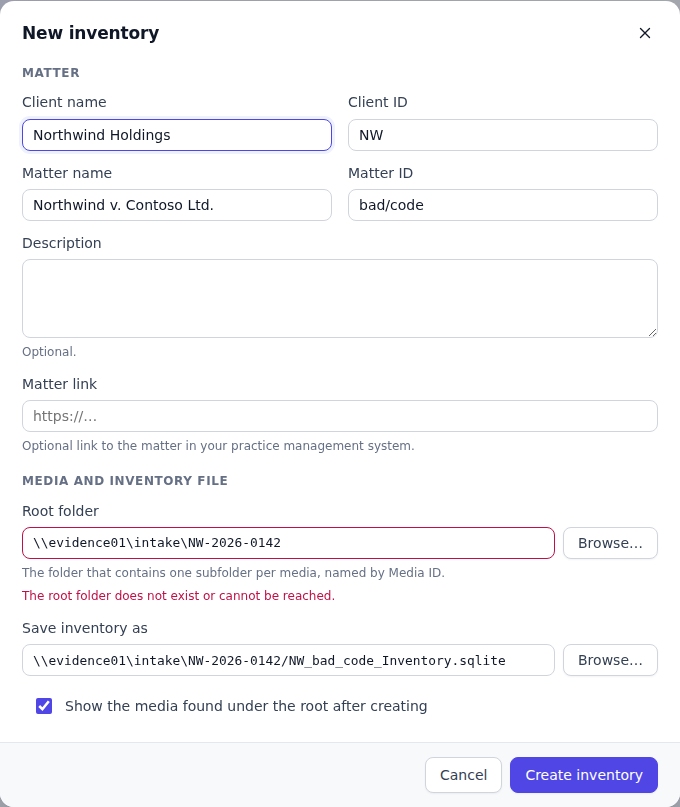
When an inventory opens
- Older inventory: if it was made by an older version of Accession, you are asked to Back up and upgrade. A backup copy is kept next to the file.
- Root folder not reachable (share offline, moved): Retry, Open offline (browse only, no scanning) or Change root path… if the media were moved.
- New media found: folders under the root that are not in the inventory yet are offered for adding.
- Someone else has it open: see Locking and read-only.
Dashboard
Everything received for the matter at a glance: totals, the media, categories, extensions, files by year and the largest files. Most parts can be clicked to open the matching files on the Files screen.
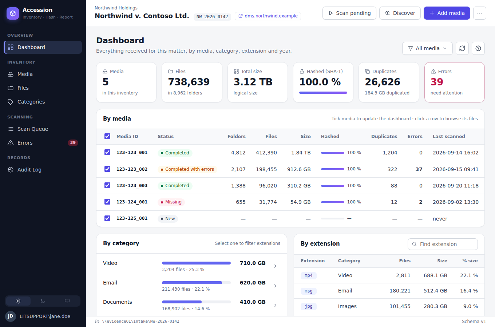
Choosing media
Tick media in the By media table to update the whole dashboard for just those media. The header tick box selects all or none. Unticked media stay in the list, dimmed, so you can tick them again.
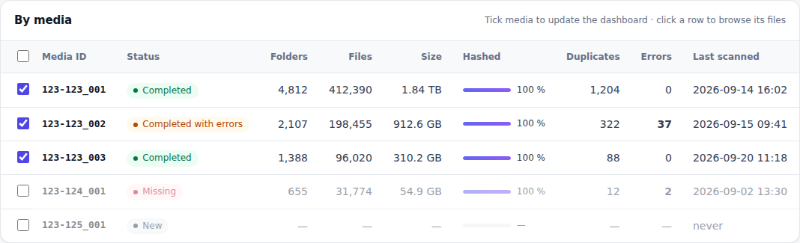
The media filter at the top right does the same, with Select all, Unselect all, a search box and Only (select just that media). With no media ticked the dashboard says so instead of showing empty charts.
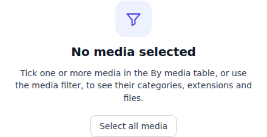
Going to the files
- Click a media row to browse its files; click a category to filter the extension table, or its arrow to open those files.
- Click an extension, a year column, the Duplicates tile or a largest file to open the matching files. Your media choice goes with you.
Media
The media are the folders directly under the root folder, one per drive, device or delivery (for example
123-123_001). This screen lists them with their status and totals.
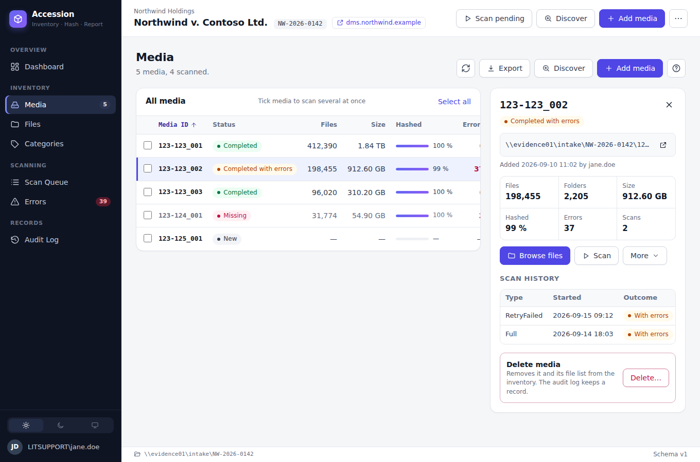
- Add media adds media folders; Discover looks for new folders under the root.
- Select a media to see its details: totals, the scan history, Browse files, Scan, and under More: Rescan, Resume an interrupted scan, Retry failed files.
- Tick several media to scan them together. Scan pending (top bar) scans every media not scanned yet.
- Export exports the ticked media (or all) to Excel.
- Delete… removes a media and its file list from the inventory (you type its Media ID to confirm). The folder on disk is not touched, and the audit log keeps a record.
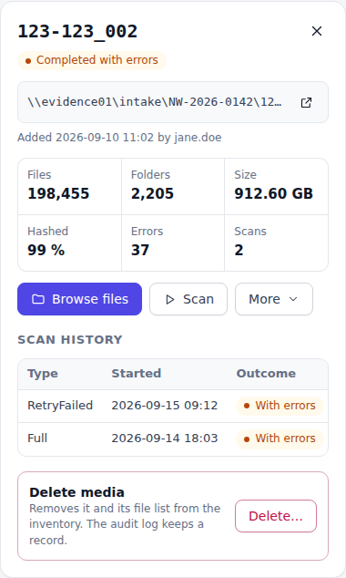
Status
| Status | Meaning |
|---|---|
| New | Added, not scanned yet. |
| Queued, Scanning, Hashing | Waiting or being scanned (files listed, then hashed). |
| Completed | Every file listed and hashed. |
| Completed with errors | Done, but some files could not be read: see Errors. |
| Incomplete | The scan was interrupted; Resume finishes it. |
| Missing | The folder is no longer under the root. |
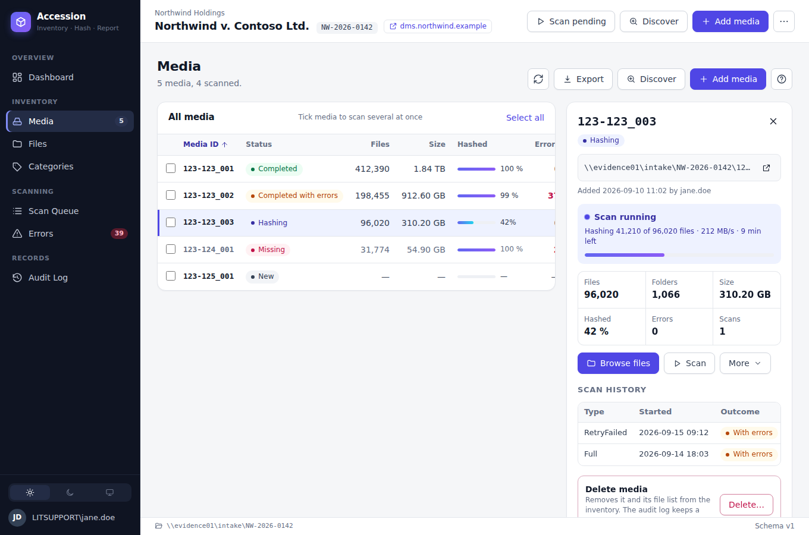
Files
Every file in the inventory with its folder, size, dates and SHA-1. Choose where to look on the left, narrow the list with filters, and act on a file.
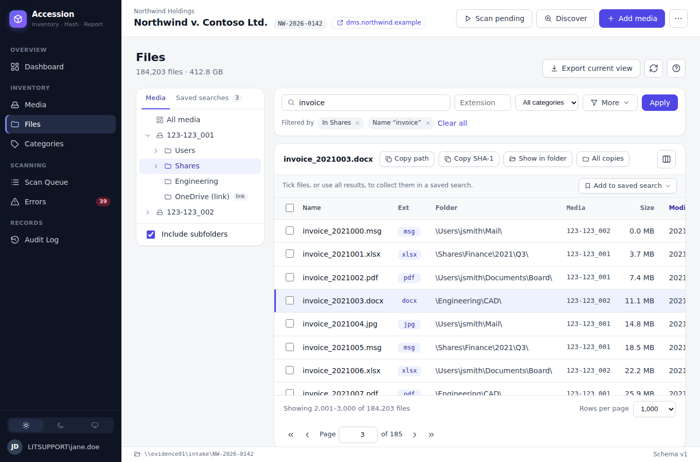
Where: the Media tab
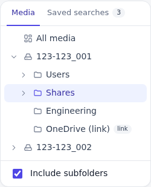
The Media tab lists the media; expand one to see its folders. Click a media or folder to show its files, with or without Include subfolders. All media shows everything.
The list always has one location: a media or folder, a saved search, or the media you chose on the Dashboard. Choosing another replaces it. Browse files on the Media screen or Dashboard selects the media here.
Right-click a media or folder for Open in Explorer, Copy folder path, Copy this folder… (copies everything in it and its subfolders) and Export this folder….
Browsing the evidence in Explorer is not read-only: Windows can write Thumbs.db or
desktop.ini into network folders and update last-access times when it shows thumbnails or
previews. Accession itself only reads the files.
Filters
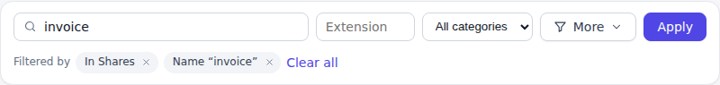
- Type a name or extension (
(none)for files without one), choose a category, or open More for hash status, size, modified dates, duplicates only, files with errors and an exact SHA-1. Press Apply or Enter. - Applied filters show as chips under the filter bar. The × on a chip removes just that filter; Clear all removes all of them.
- Filters stay while you move around the tree, so you can narrow a category or extension folder by folder.
The table
- Click a column header to sort; the columns button shows or hides columns.
- Pages hold 1,000 files by default (Rows per page up to 50,000); the pager jumps to any page.
- Select a file for Copy path, Copy SHA-1, Show in folder (Explorer) and All copies (every file with the same SHA-1). Files are never opened.
- Right-click a file (or press the menu key or Shift+F10) for Copy SHA-1, Copy path, Copy file name, Show in folder, Find all copies, Filter by this extension, Add to saved search and Copy To…. Right-clicking a ticked row acts on all ticked rows; any other row acts alone. For several files the menu says so (e.g. Copy 51 SHA-1 values, one per line), and Show in folder, Find all copies and Filter by this extension, which are for one file, are unavailable.
- Export current view exports exactly the files shown (all pages) to Excel.
- Copy writes a copy batch or copies the ticked files (or all results): see Copying files.
Saved searches
A saved search is a named list of files you collect, for example "Privileged" or "Board minutes 2021". It is kept in the inventory, so everyone who opens it sees the same lists.
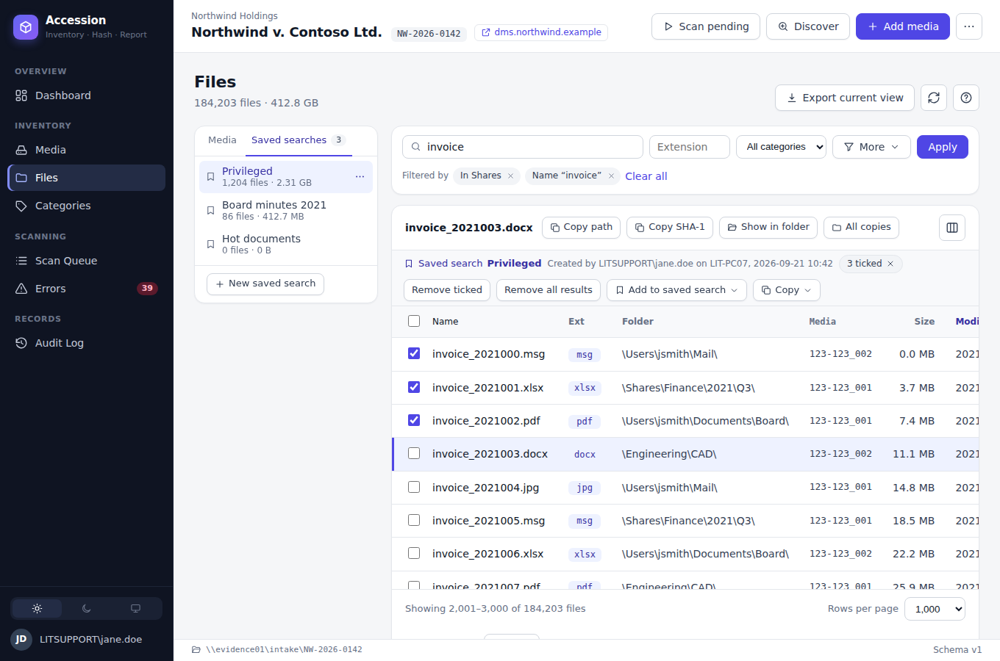
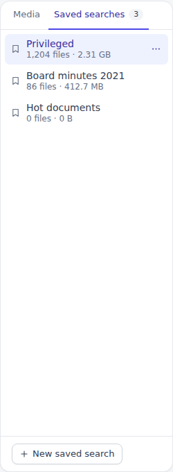
Collecting files
- Filter the files (or tick rows in the table).
- Choose Add to saved search and an existing saved search or New saved search…. With files ticked, only the ticked files are added; with nothing ticked, all results (every page). The menu says which.
A file already in the list is not added twice.
Working with a saved search
- Click it on the Saved searches tab to show its files; the filters narrow within it. The bar above the table shows who created it, on which computer and when (hover over it in the list for the description too).
- Remove takes the ticked files out of it, or all results when nothing is ticked (the button says which, and asks first). The files themselves are not changed.
- The ⋯ menu has Edit (name and description) and Delete.
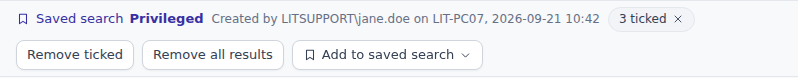
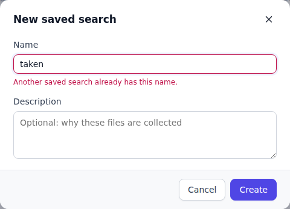
Names must be unique. Files stay in a saved search after a rescan; deleting a media removes its files from saved searches. Every change is recorded in the audit log.
Copying files
Copy files out of the evidence to another folder, for example for a production or a review platform. On the Files screen, tick the files (or filter them), then open Copy above the table:
- Generate copy batch… writes a
.batfile with one copy command per file. Run it yourself, for example on a computer closer to the data. - Copy files… copies the files in Accession, in the background with progress and Cancel.
Both copy the ticked rows, or all results (every page) when you choose so or nothing is ticked. The source files are only read: nothing is ever written under the root, and the destination cannot be inside it.
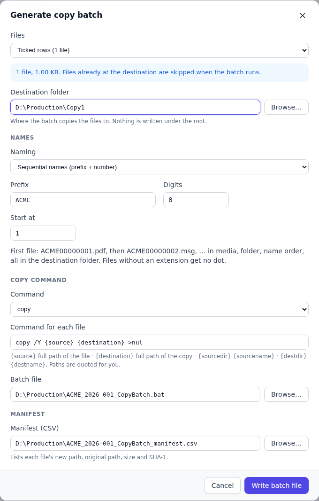
Names
- Keep the original folders and names: each file goes to
destination\Media ID\folders\name, as under the root. - Sequential names: all files go into the destination folder as prefix + number with
their extension, for example
ACME00000001.pdf. Choose the prefix, the number of digits and the first number. Files are numbered in media, folder, name order; a file without an extension gets no dot. - SHA-1 + name: all files go into the destination folder as
<sha1>_<name>, for example3f7a…e91c_Board minutes.pdf. A file with the same SHA-1 and name is copied once. Copying in the app hashes files that are not hashed yet; a batch leaves them out (they are listed in the manifest).
The copy command (batch)
- copy:
copy /Y {source} {destination} >nul. - robocopy copies by folder and file name, so it cannot rename: it works only with Keep the original folders and names. It keeps the file times.
- Custom: type your own, such as
copy -d -g -f {source} {destination}. Placeholders:{source}(full path of the file),{destination}(full path of the copy),{sourcedir},{sourcename},{destdir}and{destname}. Paths are put in quotes for you.
Running the batch
Double-click the .bat file or run it in a command prompt. It creates the folders, skips files that already
exist at the destination, and ends with the number of files copied, skipped and failed. Names with accents and
% or & work. copy does not keep the created time; use robocopy or
Copy files… for that.
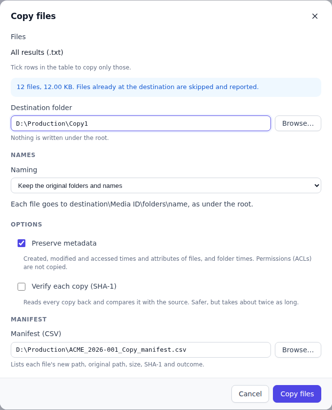
Copying in the app
- Preserve metadata (on by default) keeps the created, modified and accessed times and the attributes (read-only, hidden, system, archive) of the files, and the times of the folders it creates. Permissions (ACLs) are not copied.
- Verify each copy (SHA-1) reads each copy back and compares it with what was read from the source; a copy that differs is deleted and reported as failed. It takes about twice as long, so it is off by default.
- Files already at the destination are skipped and left as they are. A file that cannot be read is reported as failed and the copy goes on.
- Several files are copied at the same time: Copy threads in Settings (4 by default). The manifest still lists the files in copy order.
- Cancel stops the files being copied (a half-copied file is deleted): what was copied stays, and the manifest says where it stopped.
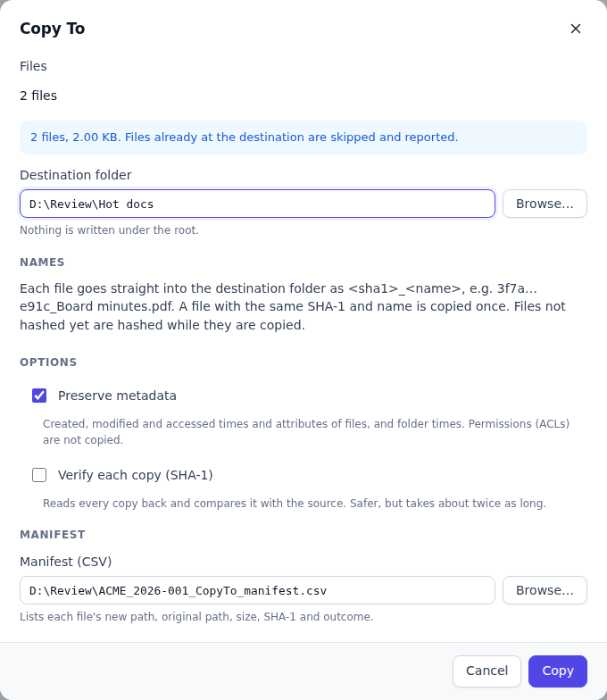
Copy To…
Right-click a file (or a ticked file, for all ticked files) and choose Copy To… to copy just those
files into one folder, named <sha1>_<name>: handy for sending a few documents for
review. Choose the destination; preserve metadata, verify and the manifest work as in Copy files….
Files not hashed yet are hashed while they are copied, and a file that changed since the scan is named by its
current content (the manifest says so).
The manifest
Both write a CSV manifest (it opens in Excel) with one row per file in copy order: number, new path, original path, Media ID, size in bytes, modified time (UTC), the SHA-1 from the inventory, and the outcome (In batch, Copied, Verified, Skipped, Failed or Not in batch, with the reason). When a verified file's SHA-1 no longer matches the inventory, the manifest says the file changed after the scan. Every batch and copy is recorded in the audit log.
Categories
Files are grouped by extension into fixed categories (Email, Documents, Spreadsheets, Images, …). Select a category to see its extensions with their file counts and sizes; open files from here on the Files screen.
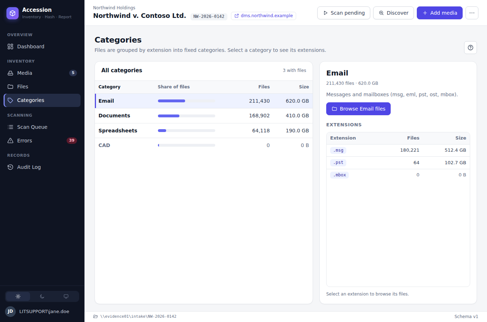
Scan Queue
One media is scanned at a time; the others wait in order. The screen shows the running scan (what it is doing, files and speed) and the media waiting.
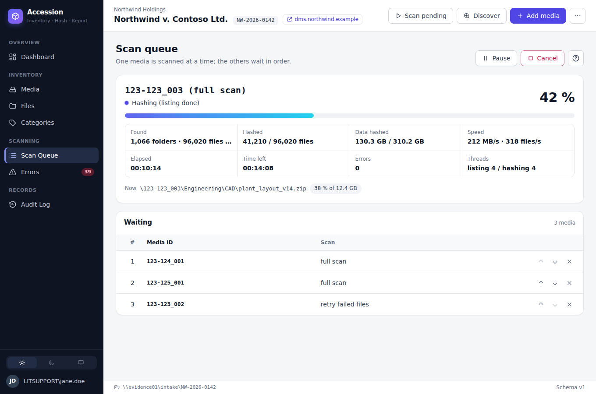
- Pause, Resume and Cancel control the running scan. A cancelled or interrupted scan can be finished later with Resume on the Media screen.
- Use Move up, Move down and Remove from queue on waiting media.
- Now shows the file that has been hashing longest. A large file (virtual disks, backups, mailbox archives) shows its own progress, e.g. 38 % of 12.4 GB: hashing a very large file can take a long time, and the media waiting start when it is done.
- Closing Accession during a scan asks first; the scan can be resumed the next time.
Errors
Files and folders that could not be read or hashed (locked, access denied, changed while being scanned, …). They are listed so you can report them to the sender, and they are included in the Excel export.
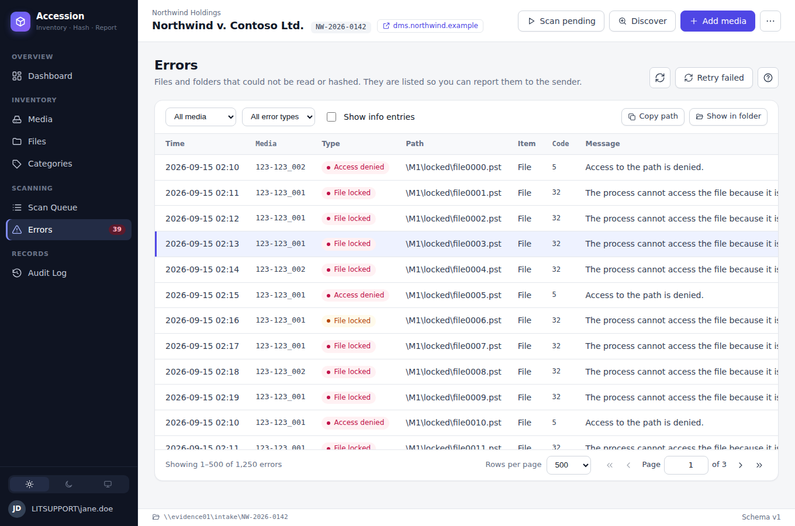
- Filter by media and error type. Show info entries adds notes such as skipped links (these are not errors).
- Select an entry for Copy path or Show in folder.
- Retry failed hashes the failed files of the chosen media again, for example after a locked file was closed.
Audit Log
Every change to the inventory, who made it, on which computer and when: created, opened, media added or deleted, scans, exports, saved searches and more. Entries can never be edited or deleted.
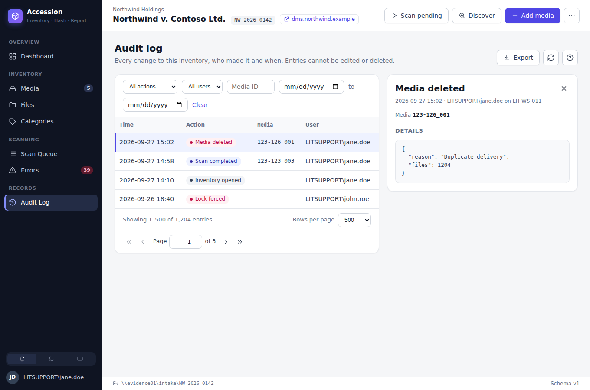
- Filter by action, user, media and date range; Clear resets the filters.
- Select an entry to see its details.
- Export saves the entries matching the filters to an Excel workbook.
Export to Excel
Export the inventory to an Excel workbook to send to the producing party. Start it from Export to Excel… in the ⋯ menu, Export on the Media screen (ticked media) or Export current view on the Files screen.
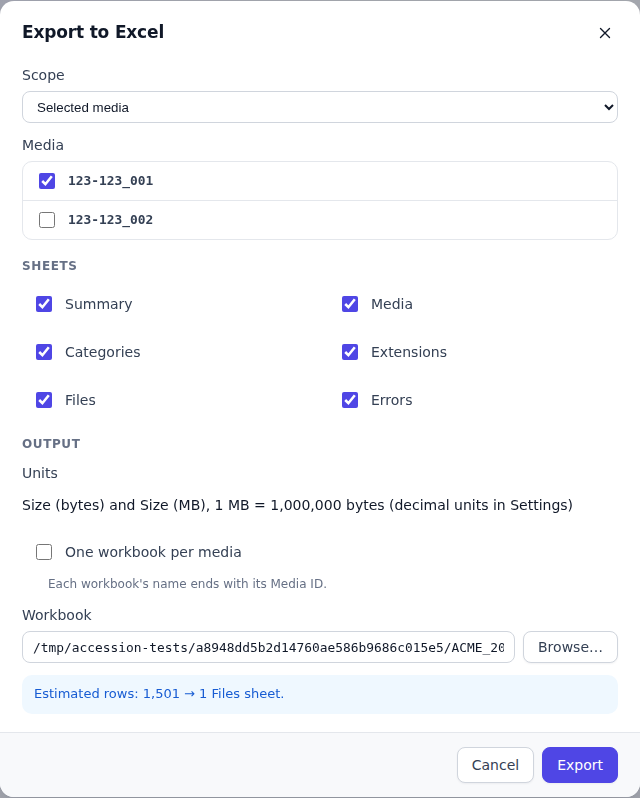
- Scope: all media, selected media, or the current Files view (exactly the files it shows).
- Sheets: Summary, Media, Categories, Extensions, Files and Errors; untick the ones you do not need.
- One workbook per media writes a workbook for each media, named with its Media ID.
- Estimated rows shows how big the export will be and how many Files sheets it needs.
In the workbook
- Sizes are in two columns: Size (bytes) and Size (MB) (numbers, so Excel can sort and add them; MiB with binary units in Settings).
- Dates are in UTC. Each sheet has a frozen, filtered header row.
- Excel holds about a million rows per sheet: larger file lists continue on Files (1), Files (2), …
The export runs in the background with its progress and a Cancel button; a cancelled export leaves no file behind. When it finishes you can open the folder. Every export is recorded in the audit log.
Settings and properties
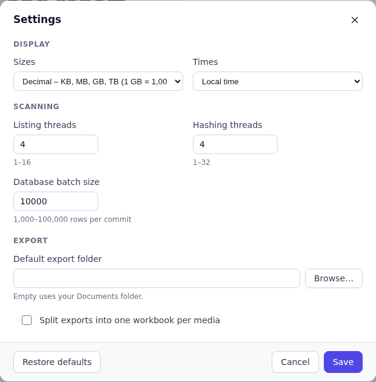
Settings
Open Settings with the gear on the Start screen, Settings in the ⋯ menu or Ctrl ,. They apply to you on this computer.
- Display: sizes in decimal (KB, MB, GB) or binary (KiB, MiB, GiB) units; times in local or UTC.
- Scanning: threads for listing and hashing, and the database batch size. The defaults suit most shares.
- Export: the default export folder and whether to write one workbook per media.
- Updates: Check for new versions (on by default) – see below.
- Copying: how many files Copy files and Copy To copy at the same time (4 by default, up to 16). More threads help with many small files or a network destination; for large files the disks are the limit.
New versions
A few seconds after start-up, at most once a day, Accession asks GitHub for its latest release. When there is a newer one, a bar says so on the Start screen and on the inventory screens: What's new shows the release notes, Download opens the release page, Skip this version stops announcing it (a later version is announced), and × hides it until the next start. Check for updates… in the ⋯ menu (or under the version on the Start screen) asks at once. Only the request is sent, nothing about you or your inventories; turn the check off in Settings on computers without internet.
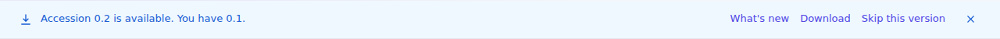
Inventory properties
Inventory properties in the ⋯ menu edits the matter details (client, matter, IDs, description, matter link) and shows the inventory's facts. Change root path points the inventory at media that were moved, without scanning again.
The top bar
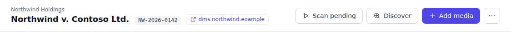
The theme switch at the bottom of the side navigation chooses light, dark or the Windows setting.
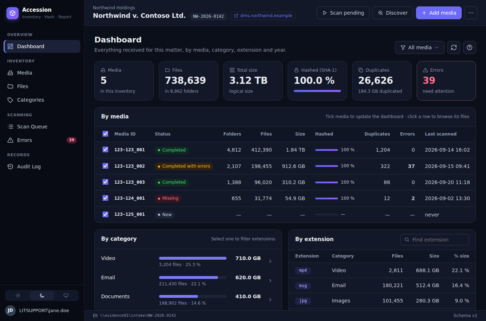
Locking and read-only
Only one person at a time can change an inventory. When you open it, you hold its lock; others can still open it read-only to browse and export.
- If someone else has it open, you see who and on which computer, and can Open read-only. When their session is no longer active (for example their computer went to sleep), you can also Take over lock.
- If Accession was not closed properly on your computer, it simply opens normally and says the last session was not closed.
- A read-only inventory shows an amber chip in the top bar with who has it open; hover over it for how to edit.
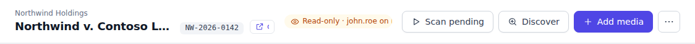
Keyboard shortcuts
| Keys | Action |
|---|---|
| F1 | Help for the screen shown |
| Ctrl N | New inventory |
| Ctrl O | Open inventory |
| Ctrl , | Settings |
| F5 | Refresh the screen |
| Ctrl F | Find (the screen's search box) |
| Alt 1 … 7 | Go to a screen in the side navigation |
| ↑ ↓ | Move through table rows |
| Enter | Open the selected row, confirm a dialog |
| Esc | Close a dialog or menu (and this help window) |
| ? | Show the shortcut list in the app |